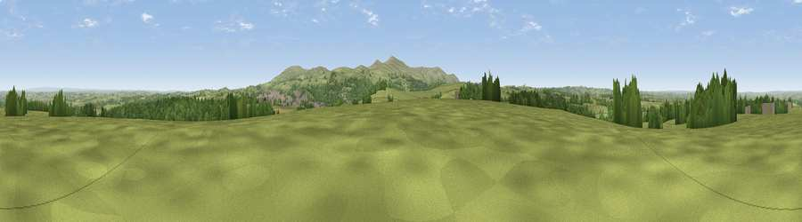

Viewpoint near Folly Gate
#14804 in England · top 20% of its area beats it · near Folly GateThe view, rendered

A 360° render of this exact spot computed from the terrain model, tree cover and land cover — summer colours, afternoon light, calibrated against photographs of famous viewpoints. Real trees, hedges and buildings will differ in detail.
The panorama
Grey silhouette: terrain skyline in each direction (720 bearings, Earth curvature and refraction included). Dashed green: skyline with trees (+15 m) and buildings (+8 m) as obstacles. Blue strip: how far the ground is visible on each bearing.
Where the view opens
Wedge length = distance to the farthest visible ground on that bearing (vegetation-aware). Rings at 10, 25 and 50 km.
What fills the view
73% grassland · 19% woodland · 5% cropland · 3% built-up
Angular shares of the visible panorama (visual magnitude), not map area. Landscape diversity 0.35 (0–1 Shannon).
Key numbers
More beautiful places nearby
The staircase of upgrades: each row has a higher view potential than everything closer. Driving times are estimates from straight-line distance, calibrated against real road routing — check an actual route before setting out.
| Place | Direction | Drive | Score |
|---|---|---|---|
| Viewpoint near Okehampton | SSW · 2 km | ~6 min | 60.0 |
| Viewpoint near Sticklepath | E · 5 km | ~11 min | 63.8 |
| Viewpoint near Sourton | S · 6 km | ~13 min | 72.2 |
| Viewpoint near Okehampton | SSE · 6 km | ~13 min | 74.5 |
| Yes Tor | S · 7 km | ~15 min | 78.5 |
| Viewpoint near North Bovey | SE · 21 km | ~36 min | 79.3 |
| Cairn | SE · 26 km | ~42 min | 79.8 |
| Viewpoint near Haytor Vale | SE · 27 km | ~43 min | 80.1 |
50.75710, -4.02059 · source: screening · position refined by local search. Computed location — check access rights before visiting.